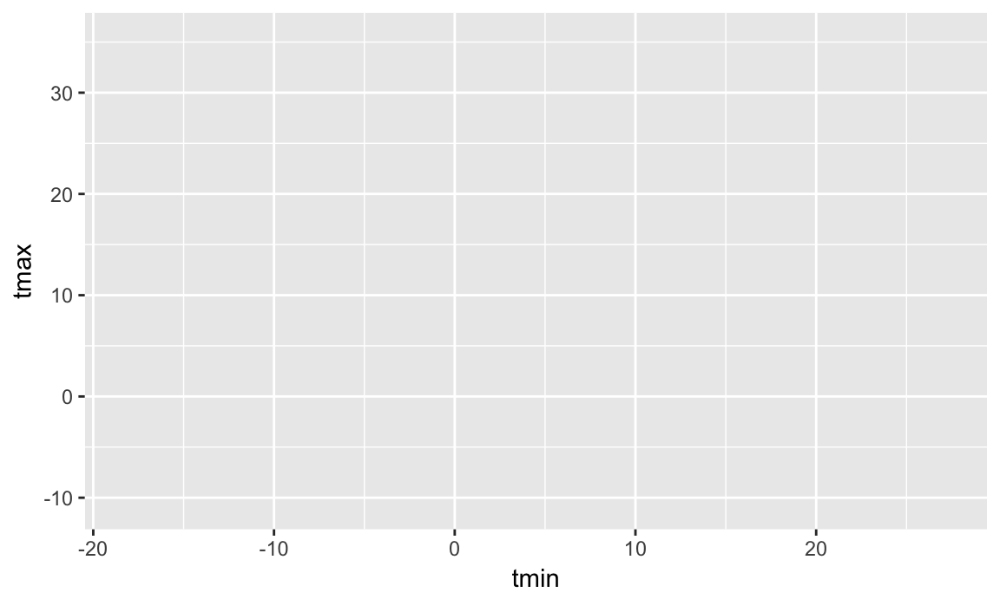

ggplot2Good visualization is a critical step in data analysis.
New project for viz and EDA.
library(tidyverse)
## Loading tidyverse: ggplot2
## Loading tidyverse: tibble
## Loading tidyverse: tidyr
## Loading tidyverse: readr
## Loading tidyverse: purrr
## Loading tidyverse: dplyr
## Conflicts with tidy packages ----------------------------------------------
## filter(): dplyr, stats
## lag(): dplyr, stats
library(rnoaa)
weather = meteo_pull_monitors(c("USW00094728", "USC00519397", "USS0023B17S"),
var = c("PRCP", "TMAX", "TMIN", "TAVG"),
date_min = "2016-01-01",
date_max = "2017-01-01")ggplot(weather, aes(x = tmax, y = tmin)) + geom_hex()
weather %>%
ggplot(aes(x = date, y = tmax, size = prcp, color = id)) + geom_point(alpha = .5) + facet_grid(.~id) + geom_smooth()
## `geom_smooth()` using method = 'loess'
## Warning: Removed 2 rows containing missing values (geom_point).http://r4ds.had.co.nz/data-visualisation.html and http://r4ds.had.co.nz/graphics-for-communication.html;
http://vita.had.co.nz/papers/layered-grammar.pdf
http://stat545.com/cm006_tibbles-dplyr-ggplot2.html and https://github.com/jennybc/ggplot2-tutorial
http://www.cookbook-r.com/Graphs/
http://shop.oreilly.com/product/0636920023135.do
http://varianceexplained.org/r/teach_ggplot2_to_beginners/
http://www.jstor.org/stable/2683253?seq=1#page_scan_tab_contents https://www.biostat.wisc.edu/~kbroman/presentations/graphs2017.pdf